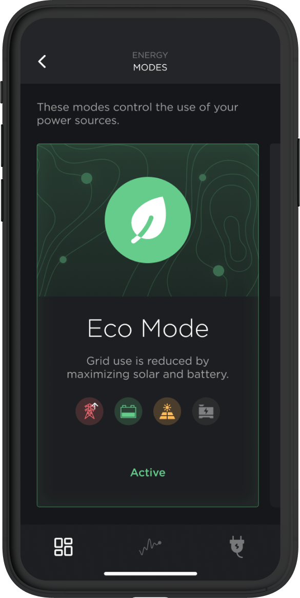
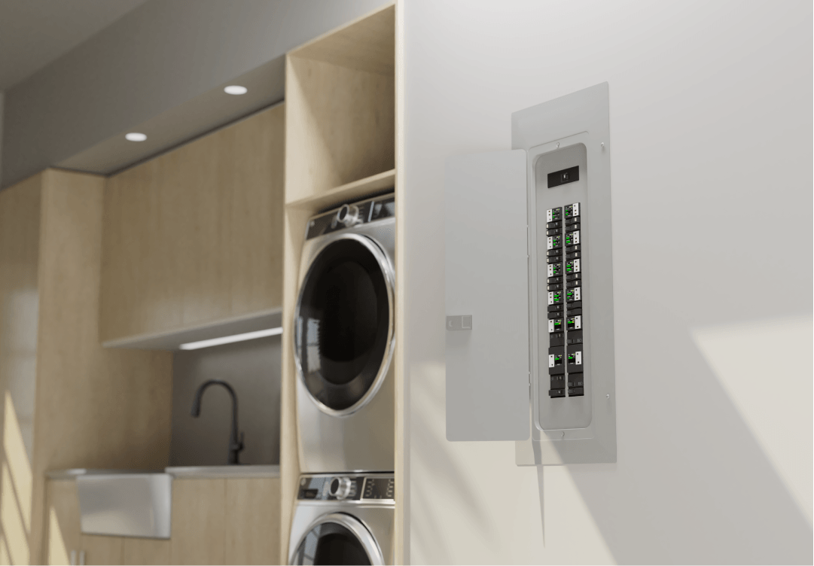
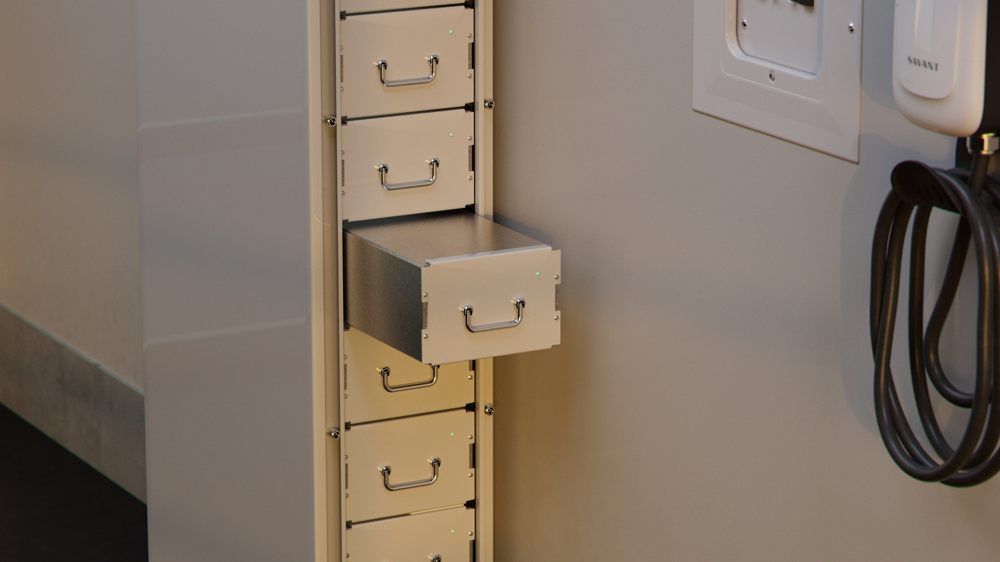
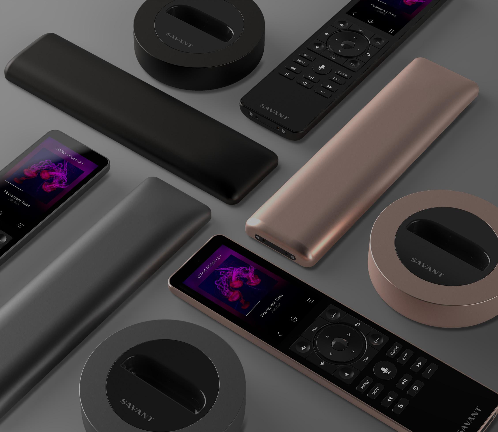
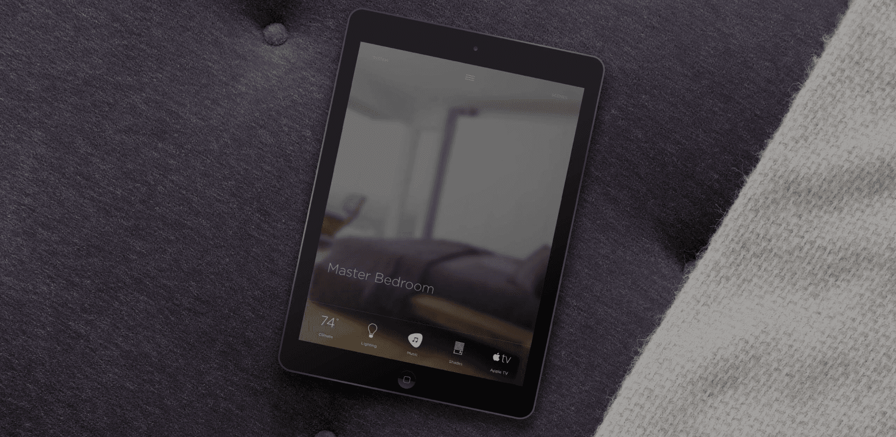
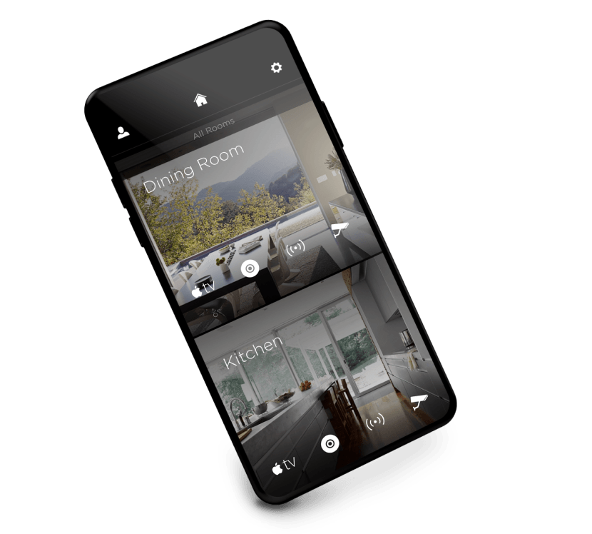

Aplikacja
Dashboard do scen, audio, pokojów i szybkiego sterowania funkcjami domu.
System premium
Savant to system z segmentu premium, nastawiony na elegancki interfejs, sceny, audio/wideo, oświetlenie, klimat oraz coraz mocniej także zarządzanie energią. Dobrze pasuje do domów, w których liczy się efekt końcowy i prosta obsługa dla użytkownika.
Oficjalna strona SavantSavant stawia na jedną aplikację do domu: sceny, muzyka, światło, klimat, wideo, bezpieczeństwo i energia mają być dostępne bez technicznego chaosu. Dla użytkownika ważne są gotowe tryby: poranek, kino, kolacja, impreza, noc, wyjście z domu.
Na stronie producent podkreśla, że Savant Home łączy lighting, climate, music i video w jedno doświadczenie, a aplikacja Savant jest elementem sterowania również w systemach energetycznych.

Dashboard do scen, audio, pokojów i szybkiego sterowania funkcjami domu.

Moduły w panelu elektrycznym do monitorowania i sterowania obwodami.
Sceny energetyczne, priorytety obciążeń i logika pracy przy zasilaniu awaryjnym.

Rozwiązania zasilania awaryjnego i magazynowania energii dla domu premium.

Pilot z ekranem dotykowym do scen, audio/wideo i szybkiego sterowania pokojem.

Panel/tablet jako elegancki interfejs do scen, światła, muzyki i klimatu.

Widok pomieszczeń i szybkich akcji, czyli obsługa domu bez technicznego chaosu.
Savant ma sens tam, gdzie klient oczekuje eleganckiego interfejsu i prostych scen zamiast technicznego panelu.
System dobrze pasuje do domów z multiroom audio, kinem, strefami rozrywki i integracją sprzętu AV.
W nowszych projektach warto myśleć o integracji automatyki z monitoringiem energii, baterią i priorytetami obwodów.
Źródło grafik i opisów: oficjalna strona Savant. savant.com